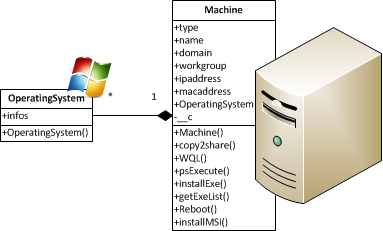
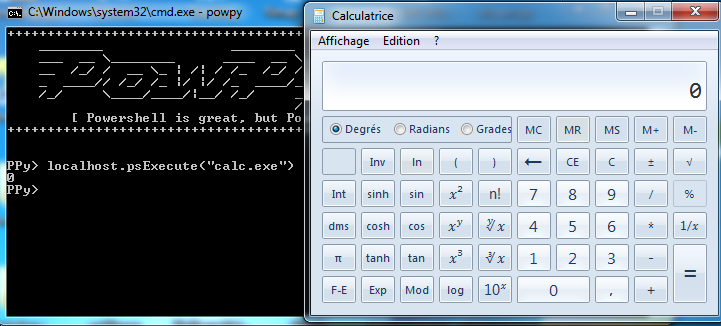
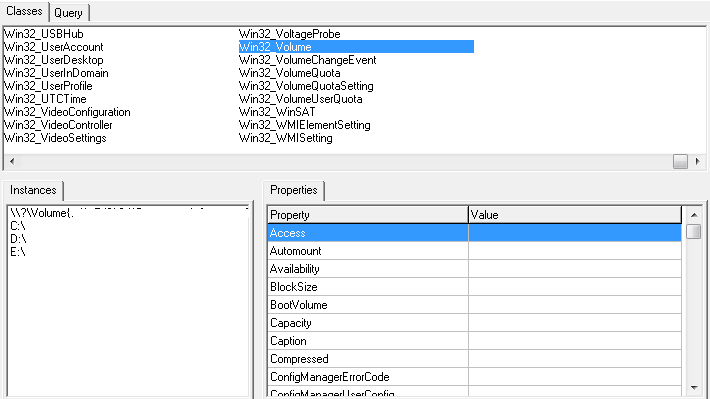

This part assumes you are aware with Prerequisites. Here, we will talk about few basics in local we will reuse later in remote.
A specific machine is represented by a Machine Class (pwplib.Machine):
Actually when launching PowPy, a first machine is initialized: Our machine!
PPy> localhost
Machine [fluxius-windev]
{
type: localhost
name: fluxius-windev
workgroup: OUFGROUP
domain: OUFGROUP
ipaddress: (u'192.168.0.3',)
macaddress: AC:84:xx:xx:xx:xx
<[OperatingSystem]: version="6.1.7600"; name="Microsoft Windows 7 Professionnal"; >
}
And as you can see, there are many operationgs that we can perform.
Two methods have been implemented to get a list of installed softwares. The first one is getExeList() used as follows:
PPy> localhost.getExeList()
[('Adobe Flash Player 11 Plugin 64-bit', '11.1.102.55'), ('Broadcom 802.11
...
']
The getExeList() also includes a paramaters justpath to only return execution paths:
PPy> localhost.getExeList(True)
[u'Acrobat.exe', u'AcrobatInfo.exe', u'AcroDist.exe', u'AcroRd32.exe', u'Adobe A
...
']
The second implementation comes from WMI extension for win32com that this framework is using (getMsiList()), which gives you only softwares installed with MSI packages:
PPy> localhost.getMsiList()
[(u'HexEdit', u'3.0.0'), (u'Microsoft Security Assessment Tool 4.0', u'1.0.0'),
(u'PxMergeModule', u'1.00.0000'), (u'Microsoft Application Error Reporting', u'1
...
']
Let’s call the famous calculator program of windows using psExecute() method:
If the process is executed properly, 0 is returned.
Installing a software is very easy. Like getExeList() and getMsiList(), we have two methods: installMSI and installEXE.
Here is an example using installEXE specifying its path:
PPy> localhost.installEXE(r"C:\pathto\executable.exe")
The second method installMSI is used like installEXE, but you can also precise if you want to install the software of all users or not:
PPy> localhost.installMSI(r"C:\pathto\package.msi")
Note
On Windows Vista and Seven for standart users, these methods are blocked by the User Account Control.
There are many ways to bypass it
To copy files from a source to a destination we can perform this operations:
PPy> localhost.copy2share(r"C:\pathto\source.ext", r"C:\pathto\destination.ext")
We will see after in the Network part its logic, to see how a file can be copied from a computer to another. This method is to be evolved for network purposes.
If you use WMI Explorer, you could see there are a lot of classes, even not implemented here:
With PowPy for non-implemented methods, there is a solution: the use of WQL()‘s method
PPy> volumes = localhost.WQL("Select * From Win32_Volume")
PPy> for volume in volumes:
... print volume.BlockSize, volume.FileSystem
...
4096 NTFS
4096 NTFS